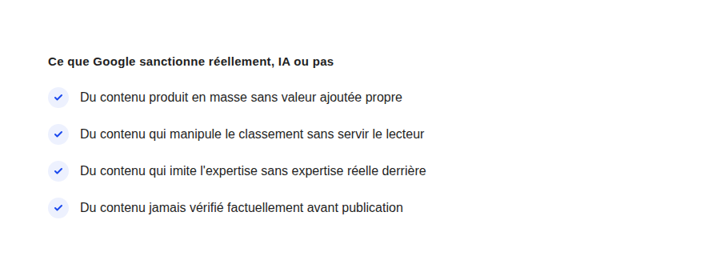

Contenu généré par IA et Google : ce que dit vraiment la politique anti-spam
« Google pénalise le contenu IA » — c'est l'idée reçue la plus répandue chez mes clients qui hésitent à utiliser l'IA pour rédiger. Ce n'est pas ce que dit la politique de Google, et la confondre coûte de vraies opportunités.
La position de Google, répétée dans sa documentation officielle sur le contenu utile depuis 2023, est constante : ce qui compte est de savoir si le contenu est produit pour les personnes d'abord, quelle que soit la méthode de production. L'IA générative n'est ni explicitement autorisée ni explicitement interdite — elle est traitée comme n'importe quel autre outil de production, du correcteur orthographique au traducteur automatique avant elle.
Ce que la politique anti-spam sanctionne réellement
La politique de Google sur les abus de contenu généré à grande échelle (« scaled content abuse ») vise un comportement précis : produire un volume important de pages dans le but principal de manipuler le classement dans les résultats de recherche, sans réel bénéfice pour le lecteur. Le critère central est l'intention et le résultat — pas l'outil utilisé pour taper le texte.
Un contenu IA qui passe le test
Un article rédigé avec l'assistance d'une IA, mais vérifié factuellement, structuré pour répondre réellement à une question, et enrichi d'une expertise ou d'une expérience propre à son auteur, ne correspond à aucun des critères de la politique anti-spam : il sert le lecteur, ce qui est précisément ce que Google cherche à récompenser.
Un contenu IA qui ne le passe pas
À l'inverse, générer des centaines d'articles à partir du même prompt légèrement modifié, sans vérification, sans expertise ajoutée, dans le seul but de capter du trafic de recherche : c'est exactement le comportement visé par la politique — que la production ait pris cinq minutes par IA ou cinq heures manuellement ne change rien au jugement porté sur le résultat.

Pourquoi cette confusion coûte cher aux équipes marketing
Deux réactions extrêmes se dégagent chez les équipes qui découvrent le sujet : soit un rejet total de l'IA rédactionnelle par peur d'une pénalité qui ne correspond pas à la réalité de la politique, soit l'excès inverse — une production massive sans aucune relecture, pensant que « l'IA écrit mieux qu'un humain de toute façon ». Les deux passent à côté du vrai critère : la valeur livrée au lecteur, pas l'outil.
Le rôle qui reste irremplaçable : la vérification et l'expertise
Ce que l'IA générative ne peut pas apporter seule, c'est une expérience réelle du sujet traité, une vérification factuelle rigoureuse, et un jugement éditorial sur ce qui mérite vraiment d'être publié. C'est précisément ce rôle de vérification et d'apport d'expertise qui détermine si un contenu assisté par IA franchit la ligne entre « utile » et « produit en masse sans valeur ».
Ce que ça change concrètement pour un processus éditorial
La méthode qui tient sur la durée : utiliser l'IA pour accélérer la production d'un premier jet, jamais pour sauter l'étape de vérification factuelle et l'ajout d'une expertise réellement humaine — exactement l'approche suivie pour les articles de ce blog, où chaque affirmation s'appuie sur un raisonnement vérifiable plutôt que sur une statistique inventée par commodité.
FAQ
Google peut-il détecter qu'un texte a été généré par IA ?
Google n'a jamais confirmé disposer d'un détecteur fiable de contenu IA utilisé comme critère de classement, et sa politique officielle insiste sur le résultat produit plutôt que sur la méthode de détection de production.
Faut-il mentionner qu'un article a été écrit avec l'aide d'une IA ?
Ce n'est pas une exigence de la politique de classement de Google. C'est en revanche une question de transparence éditoriale propre à chaque site, indépendante du référencement.
Un site 100% généré par IA peut-il bien ranker ?
En théorie, s'il respecte réellement les critères de contenu utile (vérification, valeur ajoutée, absence de manipulation), rien ne l'en empêche mécaniquement — mais en pratique, ce niveau de rigueur sans intervention humaine reste rare à grande échelle.
Envie d'un processus éditorial IA qui reste compatible avec le SEO ?
Pour aller plus loin, voir la page SEO, et les articles Erreurs de prompt marketing et Mythes du growth hacking IA.
Pour continuer sur ce sujet.